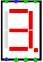
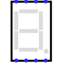

7段数码管
| 库: | 输入/输出 |
| 介绍: | 2.1.3 |
| 外观符号: |   |
行为
显示其八个一位输入的值。
段
根据输入的不同，可以是彩色的，也可以是浅灰色的。 对应关系如下。

引脚
- 北边，左起第一个（输入，位宽 1）
- 控制中间水平段。
- 北边，左数第二个（输入，位宽 1）
- 控制左侧的上部垂直段。
- 北边，左起第三个（输入，位宽 1）
- 控制上部水平段。
- 北边，左起第四个（输入，位宽 1）
- 控制右侧的上部垂直部分。
- 南边缘，左起第一个（输入，位宽 1）
- 控制左侧下部垂直部分。
- 南边缘，左数第二个（输入，位宽 1）
- 控制底部水平段。
- 南边缘，左起第三个（输入，位宽 1）
- 控制右侧较低的垂直部分。
- 南边缘，左起第四个（输入，位宽 1）
- 控制小数点。
属性
- 关于颜色
- 当显示段和小数点打开时用于绘制显示段和小数点的颜色。 （默认为红色）。
- 颜色
- 当显示段和小数点关闭时用于绘制显示段和小数点的颜色。 （默认为灰色）。
- 背景
- 用于绘制显示器背景的颜色（默认为透明）。
- 活跃度高吗？
-
如果
yes
，则当相应的输入为1时，这些段会亮起。如果no
，当相应的输入为0时，这些段会亮。 - 有小数点：
-
如果
yes
小数点可用，如果no
小数点隐藏。 - 标签
- 与组件关联的标签内的文本。
- 标签位置
- 标签相对于组件的位置。
- 标签字体
- 用于呈现标签的字体。
- 标签可见
- 显示或不显示标签。
Poke 工具行为
无
文本工具行为
无
返回 电路元件库参考手册